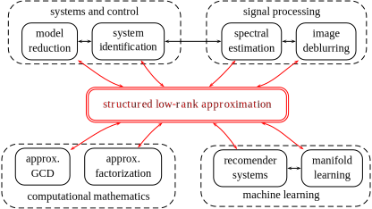

|
|
Structured low-rank approximation:
|
Overview
State-of-the-art data processing methods are model based and require a parameter estimation step prior to solving the data processing problem. This project investigates alternative model-free approaches, in which model parameters are not explicitly estimated. From a theoretical point of view, the prime advantage of the new paradigm is conceptual unification of existing data modeling and model based data processing methods. From a practical point of view, the proposed paradigm offers new methods for data processing.
The underlying computational tool in the proposed setting is low-rank approximation. A major deliverable of the project is a publicly available robust and efficient software package that makes the new paradigm available in practice. The methods developed in the project and implemented in the package effectively exploit the structure of the data matrices that appears in the applications. Exploiting the structure leads to statistically optimal (maximum likelihood) estimators in the errors-in-variables (measurement errors) setup as well as to numerically fast computational methods.
Areas benefiting from the tools developed in this project are: system and control, signal processing, machine learning, and computer algebra.
|  |
Different applications lead to structured low-rank approximation problems with different types of structure and constraints. Exploiting the matrix structure in solving the low-rank approximation problem is our expertise. Important applications in systems and control theory are system identification, model reduction, and data-driven control, where the matrix structure is mosaic-Hankel. In signal processing, low-rank approximation methods are used for adaptive filtering and image processing, where the matrix structure is multi level Hankel. In machine learning, generic applications, based on low-rank approximation, are building recommender systems, where the main issue is dealing with missing data and dimensionality reduction (manifold learning), where the structure is polynomial. In computer algebra, prototypical low-rank approximation problems are approximate common divisor computation (Sylvester structure) and polynomial decomposition problems (quasi-Hankel structure).
Performance results on benchmark problems in system identification, model reduction, and approximate common divisor computation show that the structured low-rank approximation package developed in the project is competitive with the state-of-the-art methods in these areas. Current and future work (as of August 2013) is focused on dealing efficiently with large data sets with missing data, real-time data processing, and application of the results to nonlinear system identification and tensor decomposition problems.